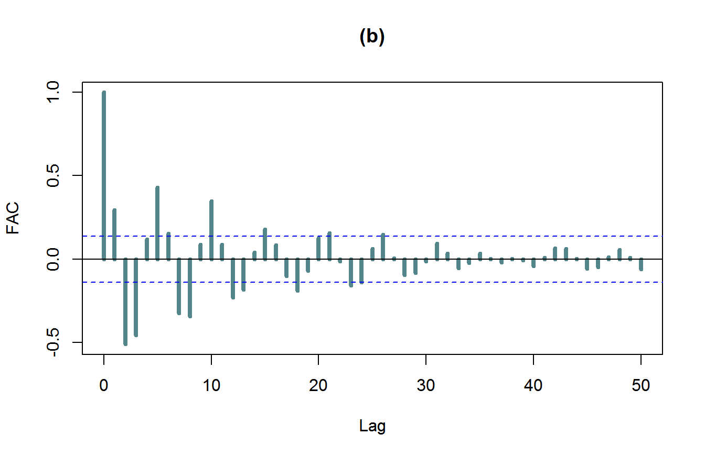
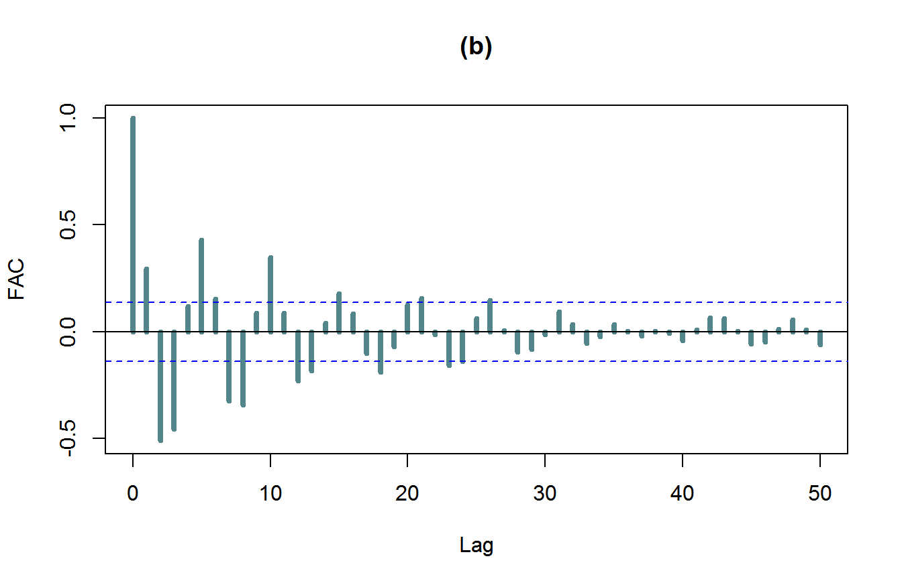

Capítulo 4 Séries Temporais
O estudo de séries temporais tem por objetivos principais definir o processo gerador de dados, fazer previsões futuras da série, identificar ciclos, tendências e/ou sazonalidades de forma que a decisão que envolve as variáveis em questão seja a mais acurada possível.
4.1 Objetivos
Dada uma série temporal \(\{Z(t_1 ),\ldots, Z(t_N)\}\), observada nos instantes \(t_1,\ldots,t_N\), podemos estar interessados em:
4.2 Séries temporais: definição formal
Neste capítulo vamos descrever os conceitos básicos utilizados dentro da teoria dos modelos de séries temporais. Inicialmente vamos introduzir os conceitos de processos estocásticos, média e função de covariância, processo estacionário e função de autocorrelação.
4.2.1 Processos estocásticos
Seja \(T\) um conjunto arbitrário de índices. Um processo estocástico é uma família de variáveis aleatórias \(\{Z_t\}_{t \in T}\) definidas num mesmo espaço de probabilidades, que denotaremos genericamente por \((\Omega, \mathcal A, P)\). O conjunto de índices \(T\) pode ser o conjunto dos números inteiros \(\mathbb{Z} = \{0, \pm 1, \pm 2,\cdots\}\), dos naturais \(\mathbb{N}=\{1,2,\cdots\}\) ou o conjunto dos números reais \(\mathbb{R}\). Observe ainda que, para cada \(t \in T\), \(Z_t\) é uma variável aleatória definida sobre \(\Omega\), sendo assim de fato uma função de dois argumentos, do índice \(t\in T\) e do ponto \(\omega \in \Omega\) que determina o valor do processo no tempo \(t\) dado por \(Z_t(\omega)\).
Uma série temporal, do ponto de vista teórico, nada mais é do que um processo estocástico para o qual o índice \(T\) é \(\mathbb{Z}\) ou um subconjunto deste. Do ponto de vista prático porém, uma série temporal é um conjunto de dados indexados no tempo. Esta dualidade de nomenclatura será utilizado em todo o trabalho. Invariavemente, letras maiúsculas, como \(Z_1,Z_2,\cdots\) denotarão a série temporal do ponto de vista teórico, isto é, como variáveis aleatórias em um processo estocástico indexado pelo tempo, enquanto letras minúsculas como \(z_1,z_2,\cdots\) denotarão a série temporal do ponto de vista prático, isto é, como uma observação das variáveis aleatórias que compõem o processo estocástico. Assim, se do ponto de vista teórico temos a série temporal \(\{Z_t\}_{t\in\mathbb{Z}}\), um processo estocástico indexado pelo tempo, uma série temporal do ponto de vista prático significa uma realização \(z_1,\cdots,z_n\) do processo \(\{Z_t\}\), observados nos tempos \(t=1,\cdots,n\). Neste caso, observamos \(z_1=Z_1(\omega),\cdots, z_n=Z_n(\omega)\), para um determinado \(\omega\in\Omega\) fixo. Embora existam maneiras mais formais e precisas de definir uma série temporal, o ponto de vista aqui adotado, embora aparentemente ambíguo na nomenclatura, servirá bem a nossos propósitos sem causar confusões.
Chamamos atenção ainda que existem condições para que um processo estocástico exista. Estes resultados dependem de uma discussão bastante técnica, bem além das intenções de nossa exposição.
4.2.2 Especificação de um processo estocástico
Sejam \(t_1,t_2,\ldots,t_n\) elementos quaisquer de \(T\) e consideremos \[\begin{equation} F(Z_1,\ldots,Z_n; t_1,\ldots, t_n ) = P \{Z(t_1 )\leq z_1,\ldots, Z(t_n) \leq z_n \} \tag{4.1} \end{equation}\] então, o processo estocástico \(Z = \{Z(t), t \in T \}\) estará especificado se as distribuições finito-dimensionais de (4.1), são conhecidas para todo \(n\geq 1\). Contudo, em termos práticos, não conhecemos todas essas distribuições finito- dimensionais. Estudaremos então certas características associadas a (4.1) e que sejam simples de calcular e interpretar. Uma maneira de especificar o processo \(Z\) seria determinar todos os produtos dos momentos, ou seja, \[\begin{equation} \mu(r_1 ,\ldots, r_n; t_1,\ldots, t_n ) = \mathbb{E \,} Z^{r_1}(t_1 )\ldots Z^{r_n}(t_n) \tag{4.2} \end{equation}\] ou \[\begin{equation} \mu(\textbf{r},\textbf{t})=\int_{-\infty}^{\infty}\ldots\int_{-\infty}^{\infty} Z^{r_1}_1\ldots Z^{r_n}_1 f(z_1,\ldots,z_n; t_1,\ldots,t_n)dz_1\ldots dz_n \end{equation}\] em que \(f(\textbf{Z},\textbf{t})\) é a função de densidade de \(F(\textbf{Z}, \textbf{t})\). Porém o que vai nos interessar são os momentos de baixa ordem, ou seja, os chamados processos estacionários de segunda ordem. Consideramos somente os momentos de primeira e segunda ordem, que serão apresentados a seguir.
4.3 Médias e covariâncias
Naturalmente, quando estamos trabalhando com um processo estocástico, cada variável aleatória que o compõe possui sua própria distribuição, assim como sua própria massa/densidade de probabilidade e sua própria média/variância. Para um processo estocástico \(\{Z_t\}_{t\in\mathbb{Z}}\) definimos, para cada \(t\in\mathbb{Z}\), a função média, \(\mu_t\) e a função variância \(\sigma^2_t\) respectivamente por
\[\begin{align} \mu_t = \mathbb{E} (Z_t) \quad \mbox{ e }\quad \sigma_t^2=\mbox{Var}(Z_t), \tag{4.3} \end{align}\] desde que as esperanças envolvidas existam. Chamamos a atenção de que embora as esperanças e variâncias de um processo estocástico existam, estas podem ser infinitas. Este fato trás diversos problemas técnicos na análise de séries temporais e requerem técnicas avançadas de análise que estão fora do escopo deste trabalho. Por este motivo, neste trabalho assumiremos tacitamente que todos os processos estocásticos e variáveis aleatórias possuem esperança e variância finitas.
Outra estrutura importante relacionada a um processo estocástico é o que chamamos de estrutura de dependência do processo. Dependência entre variáveis aleatórias pode ser definida de diversas maneiras diferentes. Neste trabalho estamos especialmente interessados na estrutura de dependência relacionadas com a covariância e a correlação entre as variáveis do processo. Observe que num processo estocástico podemos definir a covariância e a correlação entre quaisquer pares \(Z_i\) e \(Z_j\) de variáveis, para \(i,j\in\mathbb{Z}\). No caso de processos, estas funções recebem o prefixo auto para enfatizar o fato de que as covariâncias/correlações estão sendo calculadas entre as variáveis do processo. Definimos a função de autocovariância, abreviada FACV, como
\[\begin{equation} \gamma_Z(t,s) = \mbox{Cov}(Z_t , Z_s ) = E [(Z_t-\mu_t ) (Z_s-\mu_s )]=\mathbb{E} (Z_t Z_s ) - \mu_t \mu_s,\quad \mbox{ para }\quad t, s \in\mathbb{Z}. \tag{4.4} \end{equation}\]
Analogamente. definimos a função de autocorrelação, abreviada FAC, por \[\begin{equation} \rho_Z(t,s) = \mbox{Cor}(Z_t , Z_s ) =\frac{\mbox{Cov}(Z_t , Z_s )}{\sqrt{\mbox{Var}(Z_t)\mbox{Var}(Z_s)}} = \frac{\gamma(t,s)}{\sqrt{\gamma(t,t)\gamma(s,s)}}. \tag{4.5} \end{equation}\] O subscrito “\(Z\)” nas definições acima são utilizados para reforçar à qual processo estamos nos referindo. Porém, quando não houver perigo de confusão, podemos eliminar a referência ao processo associado e escrever simplesmente \(\gamma(t,s)\) e \(\rho(t,s)\).
Observe que, em princípio, as funções \(\gamma(t,s)\) e \(\rho(t,s)\) dependem tanto de \(t\) quanto de \(s\). Nos casos em que isto acontece, qualquer tipo de inferência baseada em autocovariâncias/autocorrelações se torna impossível sem tomarmos medidas para tornar esta estrutura de dependência mais simples. Algumas técnicas relevantes para isso serão estudadas adiante. De qualquer forma, a teoria clássica de séries temporais lida com casos em que essas quantidades possuem uma dependência temporal simplificada, permitindo o seu estudo. Processos com estas características são de grande importância e serão estudados em detalhes mais adiante. Isto por que, do ponto de vista matemático, tal estrutura é conveniente e permite um tratamento rigoroso e aprofundado da teoria enquanto que do ponto de vista prático, é de fácil percepção, permite a modelagem, inferência, previsão e outros aspectos aplicados relevantes de maneira simples e rápida. Tudo isso contribuiu para a difusão de métodos baseado em autocovariâncias/autocorrelações.
4.3.1 Propriedades importantes
As seguintes propriedades da função de autocovariância e autocorrelação são análogas às da covariância e correlação ordinárias, mas merecem destaque. Para todo \(t,s\in\mathbb{Z}\), com \(t\neq s\),
A propriedade 3 em particular mostra que a covariância entre duas variáveis está bem definida caso estas tenham variância finita.
Como sabemos a correlação é uma medida da dependência linear entre duas variáveis. Se \(\mbox{Cor}(X,Y)=\pm1\), isto significa que existem constantes \(\beta_0\) e \(\beta_1\) tais que \(Y=\beta_0+\beta_1X\). Ou seja, uma variável é exatamente uma função linear da outra. Valores próximos de \(\pm 1\) indicam forte dependência (linear) e valores próximos de 0 indicam fraca dependência (linear). Se \(\rho(t,s) = 0\), \(Z_t\) e \(Z_s\) são ditas não-correlacionadas, mas note que isso não quer dizer que elas são necessariamente independentes. Agora, se \(Z_t\) e \(Z_s\) são independentes, então \(\rho(t,s) = 0\). Por fim, obviamente \(\mbox{Cov}(Z_t,Z_s)=0\) se, e somente se, \(Z_t\) e \(Z_s\) são não-correlacionadas.
Para analisar as propriedades da covariância de vários modelos de séries temporais, o seguinte resultado será utilizado: se \(c_1, c_2,\cdots, c_m\) e \(d_1, d_2,\cdots, d_n\) são constantes reais e \(t_1, t_2,\cdots, t_m\) e \(s_1, s_2,\cdots, s_n\) são índices temporais, então
\[\begin{equation} \mbox{Cov}\bigg( \sum_{i=1}^{m}c_iZ_{t_i},\sum_{j=1}^{n}d_jZ_{s_j}\bigg) = \sum_{i=1}^{m}\sum_{j=1}^{n}c_i d_j \mbox{Cov} (Z_{t_i}, Z_{s_j}) \tag{4.6} \end{equation}\] podemos dizer que, a covariância entre duas combinações lineares é a soma de todas as covariâncias entre termos de suas combinações lineares. Esta expressão pode ser verificada utilizando as propriedades de esperança e covariância. Como caso especial, podemos obter o seguinte resultado
\[\begin{equation} \mbox{Var}\bigg(\sum_{i=1}^{n}c_i Z_{t_i}\bigg)=\sum_{i=1}^{n}c_i^2\mbox{Var}(Z_{t_i}) + 2\sum_{i=1}^{n-1}\sum_{j={i+1}}^{n}c_ic_j\mbox{Cov}(Z_{t_i}, Z_{t_j}). \tag{4.7} \end{equation}\]
4.4 Estacionariedade
Nesta seção definiremos o fundamental conceito da estacionariedade de uma série temporal. Existem diversas maneiras de se definir o conceito de estacionariedade, de acordo com as técnicas que se pretendem utilizar na análise das séries temporais. Em poucas palavras, uma série temporal é estacionária quando, com o passar do tempo, a série se desenvolve aleatoriamente em torno de uma média constante, refletindo alguma forma de equilíbrio estável. A ideia é de que uma série temporal estacionária \(Y\) tende a “flutuar” aleatoriamente ao redor de uma média constante. A Figura 4.1 apresenta duas séries estacionárias.
Figura 4.1: Séries estacionárias: (a) Ruído branco, (b) ARMA(1,2).
Entretanto, a maior parte das séries que encontramos na prática apresenta alguma forma de não-estacionariedade. A Figura ?? apresenta algumas séries que apresentam algum tipo de não-estacionariedade que podem resultar de diversas fontes. Algumas das fontes mais comuns de não-estacionariedade de uma série temporal são:
Mais detalhes serão apresentados adiante. A maior parte das séries que encontramos na prática apresenta alguma forma de não-estacionariedade. As séries econômicas apresentam em geral tendências lineares e muito comumente, tendência estocástica. Podemos ter, também, uma forma de não-estacionariedade explosiva, como o crescimento de uma colônia de bactérias.
Figura 4.2: Séries não-estacionárias apresentando: (a) Tendência linear, (b) quebra estrutural representada pela mudança de nível da série, (c) tendência estocástica e (d) sazonalidade.
4.4.1 Estacionariedade forte ou estrita
Um processo estocástico \(Z(t)\) é dito ser um processo processo fortemente (ou estritamente) estacionário se a distribuição conjunta de \(Z_{t_1},\cdots, Z_{t_n}\) é a mesma de \(Z_{t_1 - k}, Z_{t_2-k},\cdots, Z_{t_n - k}\), para todas as combinações de tempos \(t_1, \cdots, t_n\) e para todo \(k\in\mathbb{Z}\). Observe que este conceito se traduz em dizer que fixados os tempos \(t_1, \cdots, t_n\), ao andarmos \(k\) passos à frente homogeneamente no tempo, a distribuição das variáveis não se altera.
Quando \(n = 1\), a distribuição de \(Z_t\) é igual a distribuição de \(Z_{t-k}\) para qualquer \(k\), ou seja, os \(Z_t\)’s são identicamente distribuídos. Isto implica que num processo fortemente estacionário, as funções média (\(\mu_t\)) e variância (\(\sigma^2_t\)) são constantes para todo \(t\), isto é, \(\sigma^2=\mbox{Var}(Z_t) = \mbox{Var}(Z_{t-k})\) e \(\mu=\mathbb{E} (Z_t ) = \mathbb{E} (Z_{t-k} )\), independentemente de \(t\) e \(k\). Quando \(n = 2\), a distribuição de \((Z_t, Z_s)\) é a mesma de \((Z_{t-k}, Z_{s-k} )\), de onde segue que \(\mbox{Cov}(Z_t, Z_s ) = \mbox{Cov}(Z_{t-k}, Z_{s-k} )\), para todo \(t,s\) e \(k\).
\[\gamma(t,s)= \mbox{Cov}(Z_t, Z_s) = \mbox{Cov}(Z_{t-k}, Z_{s-k} )=\mbox{Cov}(Z_{t-s}, Z_{s-s} ) = \mbox{Cov}(Z_{t-s}, Z_0 )=\gamma(t-s,0);\] e se \(k=t\), \[ \gamma(t,s)= \mbox{Cov}(Z_{t-t}, Z_{s-t} ) = \mbox{Cov} (Z_0 , Z_{s-t} )= \mbox{Cov} (Z_0 , Z_{t-s} )= \gamma(0,s-t),\]
\[\begin{equation*} \gamma(t,s) = \gamma(0,|t-s|),\quad \mbox{ lembrando que }\ \ |t - s| =\begin{cases} t - s, & \mbox{ para } t > s;\\ s - t, & \mbox{ para } s > t. \end{cases} \end{equation*}\]
Analogamente para a função de autocorrelação. Ou seja, num processo fortemente estacionário a covariância entre \(Z_t\) e \(Z_s\) depende somente da diferença temporal \(|t - s|\) e não dos tempos \(t\) e \(s\). Ou ainda, podemos dizer que a \(\mbox{Cov}(Z_t,Z_{t+h})\) depende apenas da distância temporal \(h\) entre as variáveis (chamada de defasagem ou lag entre as variáveis), e não do tempo \(t\). Isto permite simplificar a notação:
\[ \gamma(h)= \mbox{Cov}(Z_t, Z_{t-h} )=\mbox{Cov}(Z_t, Z_{t+h} )\] \[ \rho(h)= \mbox{cor}(Z_t, Z_{t-h} )= \mbox{cor}(Z_t, Z_{t+h} ),\]
Se um processo é estritamente estacionário e tem variância finita, então a FACV depende somente do lag \(h\).
4.4.2 Estacionariedade fraca ou de segunda ordem
A estacionariedade forte é um conceito na maioria das vezes difícil de ser identificado na prática, mas muito conveniente do ponto de vista matemático. Uma outra maneira de se definir a estacionariedade de uma série de forma que a teoria é matematicamente tratável e de fácil detecção em problemas práticos é a seguinte: um processo estocástico \(Z_t\) é dito ser fracamente estacionário ou estacionário de segunda-ordem se:
a) a função média é constante para todo tempo \(t\);
b) \(\gamma(t,t-h) = \gamma(0,h)=\gamma(h)\) para todo tempo \(t\) e lag \(h\).
A condição \(\gamma(t,t-h) = \gamma(h)\) para todo tempo \(t\) e lag \(h\) é equivalente a \(\rho(t,t-h) = \rho(h)\). Além disso, \(\mbox{Var}(Z_t)=\gamma(0)\) não depende de \(t\). Como veremos adiante, em processos fracamente estacionários as funções de autocovariância e autocorrelação desempenham papel central no seu estudo. Neste trabalho, sempre que nos referirmos a um processo estacionário, estaremos nos referindo à processos fracamente estacionários.
4.4.3 Teste para significância das autocorrelações
Mais adiante quando estudarmos modelagem ARIMA, precisaremos de ferramentas para decidir se uma dada série é não-correlacionada. Para testar a hipótese conjunta de que \(\rho(1)=\cdots=\rho(m)=0\) contra a hipótese de que algum \(\rho(k)\neq0\), pode-se usar a estatística \(Q_{BP}\) desenvolvida por Box e Pierce, ou a estatística \(Q_{LB}\) desenvolvida por Ljung-Box, definidas, respectivamente, por:
Box e Pierce \[ Q_{BP}(m)={n}\sum_{k=1}^{m}\hat{\rho}_k^2(\hat{\varepsilon}) \] em que \(n\) é o tamanho da amostra (série) e \(m\) é o maior lag considerado na hipótese. A estatística \(Q_{BP}\) em grandes amostras tem distribuição qui-quadrado com \(m\) graus de liberdade.
Ljung-Box \[ Q_{LB}(m)={n(n+2)}\sum_{k=1}^{m}\frac{\hat{\rho}_k^2(\hat{\varepsilon})}{n-k} \] a qual se distribui como uma qui-quadrado com \(m\) graus de liberdade em grandes amostras. A estatística \(Q_{LB}\) possui maior poder para amostras pequenas que a estatística \(Q_{BP}\).
Observe que a hipótese nula do teste é que todas as correlações de lag \(1,\cdots,m\) são nulas, para algum \(m\) predeterminado, desta forma a escolha do valor de \(m\) é fundamental. Quanto maior o \(m\), caso não seja possível rejeitar a hipótese nula, menor é a evidencia de que a série testada é correlacionada. Porém, se \(m\) for muito grande, dois problemas poderão acontecer: primeiro, se \(m\) é muito próximo de \(n\) haverão poucos pontos amostrais com distância temporal \(m\) o que torna a estimação de \(\hat\rho_k(\hat\varepsilon)\) problemática, deteriorando a qualidade do teste; segundo, o poder do teste decresce com o aumento de \(m\). Embora não haja consenso na literatura sobre o valor ideal de \(m\), sugerimos utilizar \(m=20\) para séries com \(n\geq50\). Se a série for curta, na literatura encontra-se a sugestão \(m=\min(10,n/5)\).
4.4.4 Função de autocorrelação parcial ( FACP )
A função de autocorrelação parcial ( FACP ) entre as variáveis \(Y_t\) e \(Y_{t+k}\), denotada por \(\alpha(k)\) em processos estacionários, é a correlação entre as variáveis \(Y_t\) e \(Y_{t+k}\) removida a influência das variáveis intermediárias \(Y_{t+1},Y_{t+2},\cdots, Y_{t+k-1}\). Dada uma série temporal \(\{Y_t\}_{t=1}^\infty\) estacionária e uma variável aleatória \(X\), denotemos por \(\Pi_{r,s}(X)\) a projeção de \(X\) no subespaço gerado pelas variáveis \(Y_{r+1},\cdots,Y_{r+s-1}\). A FACP entre \(Y_t\) e \(Y_{t+k}\) é dada por \[\alpha(k)=\mbox{Cor}\big(Y_t-\Pi_{t,k}(Y_t),Y_{t+k}-\Pi_{t,k}(Y_{t+k})\big), \mbox{ para }k\geq 2,\] e \(\alpha(1)=\rho(1)\).
A FACP para um processo estacionário com média zero pode ser obtida a partir da regressão \[\begin{equation} y_{t+k} = \phi_{k1} y_{t+k-1} + \phi_{k2} y_{t+k-2} +\cdots + \phi_{kk} y_{t}+\varepsilon_{t+k}, \end{equation}\] da qual podem ser obtidas as equações de Yule-Walker.
Multiplicando ambos os lados por \(y_{t+k-j}\) e calculando o valor dividindo pela variância, tem-se
\[\begin{equation*} \rho_j = \phi_{k1}\rho_{j-1} + \phi_{k2}\rho_{j-2} +\cdots + \phi_{kk} \rho_{k-j}. \end{equation*}\] Então para \(j = 1, 2, \ldots, k\), temos:
\[\begin{eqnarray*} \rho_1 &=& \phi_{k1}\rho_{0} + \phi_{k2}\rho_{1} +\cdots + \phi_{kk} \rho_{k-1};\\ \rho_2 &=& \phi_{k1}\rho_{1} + \phi_{k2}\rho_{0} +\cdots + \phi_{kk} \rho_{k-2};\\ &\vdots&\\ \rho_k &=& \phi_{k1}\rho_{k-1} + \phi_{k2}\rho_{k-2} +\cdots + \phi_{kk} \rho_{0};\\ \end{eqnarray*}\]
Para \(k = 1\) \(\rightarrow\) \(\hat{\phi}_{11} = \rho_1\).
Para \(k = 2\) \(\rightarrow\) \(\rho_1 = \phi_{21} + \phi_{22}\rho_1\) e \(\rho_2 = \phi_{21}\rho_1 + \phi_{22}\).
Ou podemos escrever a ultima equação em notação matricial:
\[\begin{equation*} \begin{bmatrix} \rho_1 \\ \rho_2 \end{bmatrix} = \begin{bmatrix} 1&\rho_1 \\ \rho_1&1 \end{bmatrix} \begin{bmatrix} \phi_{21}\\ \phi_{22} \end{bmatrix}. \end{equation*}\] cuja solução para o estimador de \(\phi_{22}\) é dada pela regra de Cramer:
\[\begin{equation*} \hat{\phi}_{22}=\frac{\begin{vmatrix} 1&\rho_1 \\ \rho_1&\rho_2 \end{vmatrix}} {\begin{vmatrix} 1&\rho_1 \\ \rho_1&1 \end{vmatrix}} \end{equation*}\]
Para \(k = 3\) temos as equações: \[\begin{eqnarray*} \rho_1 &=& \phi_{31}+ \phi_{32}\rho_1 + \phi_{33}\rho_2\\ \rho_2 &=& \phi_{31} \rho_1 + \phi_{32} + \phi_{33} \rho_1\\ \rho_3 &=& \phi_{31} + \phi_{32} \rho_1 + \phi_{33}. \end{eqnarray*}\]
Em notação matricial temos:
\[\begin{equation*} \begin{bmatrix} \rho_1 \\ \rho_2\\ \rho_3 \end{bmatrix} = \begin{bmatrix} 1&\rho_1 &\rho_2\\ \rho_1&1 &\rho_1\\ \rho_2&\rho_1&1 \end{bmatrix} \begin{bmatrix} \phi_{31}\\ \phi_{32}\\ \phi_{33} \end{bmatrix}. \end{equation*}\] cuja solução para o estimador de \(\phi_{33}\) é dada por:
\[\begin{equation*} \hat{\phi}_{33}=\frac{\begin{vmatrix} 1&\rho_1 &\rho_1\\ \rho_1&1 &\rho_2\\ \rho_2&\rho_1&\rho_3 \end{vmatrix}} {\begin{vmatrix} 1&\rho_1 &\rho_2\\ \rho_1&1 &\rho_1\\ \rho_2&\rho_1&1 \end{vmatrix}}, \end{equation*}\] e assim sucessivamente.
4.4.5 Operador de defasagem ou operador lag
Em séries temporais é usual trabalhar com operadores que defasam a variável. Definimos então o operador de defasagem \(L\) como um operador linear tal que:
Operador defasagem \[ L^j y_t = y_{t-j} \]
As seguintes propriedades do operador \(L\) serão úteis no que segue:
\[\begin{equation*} (L^i + L^j) Y_t = L^i Y_t + L^j Y_t = Y_{t-i} + Y_{t-j}; \end{equation*}\]
\[L^i L^j Y_t = L^i (L^j Y_t ) = L^i (Y_{t-j} ) = Y_{t-i-j}.\] Ou ainda \(L^i L^j Y_t = L^{i+j} Y_t = Y_{t-i-j}\);
\(L^{-i} Y_t =L^j Y_t\), fazendo \(j = -i\). Então \(L^{-i} Y_t = L^j Y_t = Y_{t-j} = Y_{t+i}\);
\[(1-aL)^{-1} = 1 + aL + a^2 L^2 + \cdots = \sum_{j=0}^\infty (aL)^j.\] A ação do operador \((1-aL)^{-1}\) em uma variável \(Y_t\) é a seguinte: \[(1-aL)^{-1}(Y_t)=(1 + aL + a^2 L^2 + \cdots)(Y_t)=Y_t+aY_{t-1}+a^2Y_{t-2}+\cdots = \sum_{j=1}^\infty a^jY_{t-j}.\] Note ainda que, para uma constante \(c\in\mathbb{R}\) \[(1-aL)^{-1}(c)=(1 + aL + a^2 L^2 + \cdots)(c)=(c + aL(c) + a^2 L^2(c) + \cdots)=c\sum_{j=1}^\infty a^j=\frac{c}{1-a}\,.\]
\[ -aL( 1-aL)^{-1}=(1 + (aL)^{-1} + (aL)^{-2} +\cdots) \] A ação do operador \(-aL(1-aL)^{-1}\) em uma variável \(Y_t\) é a seguinte: \[\begin{align*} (-aL(1-aL)^{-1})(Y_t)&=(1 + (aL)^{-1} + (aL)^{-2} +\cdots)(Y_t)= Y_t+\frac{1}{a}Y_{t+1}+\frac{1}{a^2}Y_{t+2}+\cdots\\ &=\sum_{j=1}^\infty \frac{1}{a^j}Y_{t+j}. \end{align*}\] Para uma constante \(c\in\mathbb{R}\), a ação do operador \(-aL(1-aL)^{-1}\) é dada por \[(-aL(1-aL)^{-1})(c)=(1 + (aL)^{-1} + (aL)^{-2} +\cdots)(c)= c+\frac{c}{a}+\frac{c}{a^2}+\cdots=\frac{ca}{1-a}\,.\]
4.4.6 Ruído branco
Um importante exemplo de processo estacionário é o ruído branco, o qual é definido como uma sequência de variáveis aleatórias \(\{\varepsilon_t \}_{t=-\infty}^{\infty}\) com as seguintes propriedades:
Ruído Branco
Em outras palavras, um ruído branco é uma sequência de variáveis não-correlacionadas com média constante. Denotaremos um processo ruído branco por RB(\(0,\sigma^2\)). Escreveremos ainda \(\varepsilon_t\sim RB(0,\sigma_\varepsilon^2)\) para dizer que \(\{\varepsilon_t\}_{t}\) é um processo ruído branco com média 0 e variância \(\sigma^2_\varepsilon\)
Para um ruído branco \(\varepsilon_t\sim RB(0,\sigma_\varepsilon^2)\), \(\mu_t = \mathbb{E} (\varepsilon_t )=0\) é constante com FACV e FAC dadas por
\[ \gamma_\varepsilon(h) =\left\{ \begin{array}{cc} \sigma^2_\varepsilon, & \mbox{ se } h=0;\\ 0, & \mbox{ se } h\neq0. \end{array}\right.\qquad \rho_\varepsilon(h) =\left\{\begin{array}{cc} 1, & \mbox{ se } h=0;\\ 0, & \mbox{ se } h \neq 0. \end{array}\right. \]
O termo ruído branco resulta do fato que em uma análise de frequência do modelo, podemos mostrar que todas as frequências são iguais. As características de um processo ruído branco ficam explícitas quando analisamos o seguinte gráfico
set.seed(5647)
eps=rnorm(200)
plot(eps,type="l",lwd=2,cex.lab=1.4, xlab="Ruído Branco",ylab="", cex.main=1.7,col="cadetblue4")
acf(eps,lwd=2,cex.lab=1.4, xlab=" lag ", main=" ", cex.main=1.7,col="cadetblue4")
pacf(eps,lwd=2,cex.lab=1.4, xlab=" lag ", main=" ", cex.main=1.7,col="cadetblue4",ylim=c(-0.9,0.9))Figura 4.3: Ruído branco gaussiano simulado,FAC amostral e FACP amostral
Processo MA(1)
\[ Y_t = \varepsilon_t -0.5\varepsilon_{t-1}, \] onde \(\varepsilon_t\) é um RB\((0,\sigma_\varepsilon^2)\).
Média do MA(1)
\[\mu_t= \mathbb{E} (Y_t ) = \mathbb{E} (\varepsilon_t ) - 0.5\mathbb{E} (\varepsilon_{t-1}) = 0\]
Variância do MA(1)
\[\mbox{Var}(Y_t ) = \mbox{Var} (\varepsilon_t - 0.5\varepsilon_{t-1} )= \sigma_\varepsilon^2 + 0.5\sigma_\varepsilon^2 = 1.25\sigma_\varepsilon^2.\]
Quanto à estrutura de covariância/correlação de um MA(1), temos \[\begin{align} \mbox{Cov}(Y_t,&Y_{t+h})=\mbox{Cov}(\varepsilon_t - 0.5\varepsilon_{t-1},\varepsilon_{t+h} - 0.5\varepsilon_{t+h-1})\nonumber\\ &=\mbox{Cov}(\varepsilon_t,\varepsilon_{t+h})-0.5\mbox{Cov}(\varepsilon_t,\varepsilon_{t+h-1})-0.5\mbox{Cov}(\varepsilon_{t-1},\varepsilon_{t+h})+0.25\mbox{Cov}(\varepsilon_{t-1},\varepsilon_{t+h-1})\nonumber\\ &= \gamma_\varepsilon(h)-0.5\gamma_\varepsilon(h-1)-0.5\gamma_\varepsilon(h+1)+0.25\gamma_\varepsilon(h), \tag{4.8} \end{align}\] onde \(\gamma_\varepsilon\) denota a função de autocovariancia de \(\varepsilon_t\). Da equação (eq:gppo), percebemos que \(\mbox{Cov}(Y_t,Y_{t+h})\) só é diferente de zero quando algum dos argumentos das funções à direita da igualdade em (eq:gppo) é zero. Isto ocorre somente quando \(h=0\) (resultando em \(\mbox{Var}(Y_t)=1.25\sigma_\varepsilon^2\)) e quando \(|h|=1\) (resultando \(-0.5\sigma_\varepsilon^2\)). Em outras palavras, \(\mbox{Cov}(Y_t,Y_{t+h} )\) não depende de \(t\) e
\[\gamma(k) =\begin{cases} -0.5\sigma_\varepsilon^2, &\mbox{ se } |k|=1; \\ 0, & \mbox{ se } |k|>1. \end{cases} \quad \mbox{e} \quad\rho(k) =\begin{cases} -0.4, &\mbox{ se } |k|=1; \\ 0, & \mbox{ se } |k|>1. \end{cases} \] Concluimos que um MA(1) é estacionário.
4.5 Metodologia de Box-Jenkins ou modelagem ARIMA
Na análise de séries temporais, a metodologia de Box-Jenkins, nomeada em homenagem ao estatísticos George Box e Gwilym Meirion Jenkins, é uma metodologia pensada para a modelagem de séries temporais que é suficientemente simples de forma a atingir um grande público e suficientemente flexível para se aplicar a uma gama grande de problemas. Centrais à metodologia Box-Jenkins são os modelos Autorregressivos Integrados de Média Móvel, abreviados modelos ARIMA, que representam uma classe grande de modelos capazes de modelar uma variedade de tipos de séries temporais. O intuito é modelar os valores da série temporal em função dos seus valores passados (admitindo um termo de erro) de forma que seja possível fazer previsões para esta série. O procedimento pode ser resumido em três etapas:
Identificação e seleção do modelo. Nesta etapa verificamos se as variáveis são estacionárias, identificando possíveis tendências e/ou sazonalidades na série, removendo-as quando detectadas. Fazemos o uso das funções de autocorrelação e autocorrelação parcial para decidir qual modelo da classe ARIMA é adequado para uma primeira tentativa de modelagem..
Estimação dos parâmetros usando algoritmos computacionais para chegar a coeficientes que melhor se adaptam ao modelo ARIMA selecionado. Os métodos mais comuns são a máxima verossimilhança e os mínimos quadráticos não-lineares.
Verificação do ajuste do modelo por meio de testes. Nesta fase, verificamos se o modelo estimado está em conformidade com as especificações do modelo teórico proposto. De suma importância é a análise residual na qual o objetivo é verificar se os resíduos satisfazem a hipótese de serem não-correlacionados. De grande utilidade é o teste Ljung-Box. Se o modelo proposto é inadequado, devemos voltar para a primeira etapa e propor um modelo alternativo.
Um dos modelos mais simples, útil e intuitivo é o modelo autorregressivo. Consideremos o caso mais simples.
4.5.1 Modelo autorregressivo de ordem 1 AR(1)
Processo AR(1) \[ Y_t = c + \phi Y_{t-1}+\varepsilon_t, \] em que \(\varepsilon_t\) é um \(RB(0,\sigma_\varepsilon^2)\). \end{tcolorbox} Para calcularmos a média e a variância do processo, assumiremos primeiramente que os momentos incondicionais sejam iguais, de forma que \(\mathbb{E} Y_t=\mathbb{E} Y_{t-1}\). Com esta simplificação, fica fácil calcular a média de um processo AR(1):
A média do processo AR(1) é \[ \mu= \mathbb{E} (Y_t)=\mathbb{E}(c) +\phi\mathbb{E} (Y_{t-1})+\mathbb{E}(\varepsilon_t)\quad\Longleftrightarrow\quad \mu=c+\phi\mu+0\quad\Longleftrightarrow\quad\mu=\frac{c}{1-\phi}\,,\] desde que \(\phi\neq 1\). Se \(\phi=1\) a equação não possui solução .
Desta forma procedemos assumindo que \(\phi\neq 1\). Observe ainda que \(\mu=0\), quando \(c=0\). Para \(\phi\neq 1\), a variância de um AR(1), por sua vez, é dada por
A variância do AR(1) é \[ \mbox{Var}(Y_t)=\mathbb{E}(Y_t^2)-\mu^2=\frac{\sigma^2}{1-\phi^2}. \]
Observe que se \(|\phi|>1\), a variância será negativa, o que é um absurdo. Neste caso as equações não são compatíveis com nenhum processo. Quando \(|\phi|=1\), a variância de \(Y_t\) não está definida pois a média não está.
Deste exemplo, é possível concluir que é necessário estabelecer algumas restrições sobre o modelo para que se possa estimá-lo. Em particular, uma condição necessária para estimar os coeficientes do modelo é que \(|\phi|<1\).
Com um pouco mais de trabalho, podemos encontrar o mesmo resultado sem a suposição de que os momentos incondicionais sejam iguais. Para isso usamos o operador defasagem \(L\) e suas propriedades para obtermos
\[\begin{align} Y_t = c + \phi Y_{t-1}+\varepsilon_t \quad &\Longleftrightarrow\quad (1-\phi L)Y_t=c+\varepsilon_t\quad \Longleftrightarrow\quad Y_t=(1-\phi L)^{-1}(c)+{(1-\phi L)}^{-1}(\varepsilon_t)\nonumber\\ \qquad &\Longleftrightarrow\qquad Y_t=\mu+\sum_{j=0}^{\infty}\phi^j\varepsilon_{t-j}, \tag{4.9} \end{align}\] onde escrevemos \(\mu=c/(1-\phi)\) por simplicidade. A partir desta representação podemos facilmente obter
\[\begin{equation*} \mathbb{E} Y_t=\mu+\sum_{j=0}^{\infty}\phi^j\mathbb{E}(\varepsilon_{t-j})=\mu \end{equation*}\] e \[\begin{align*} \mbox{Var}(Y_t)&=\mathbb{E}(Y_t-\mu)^2=\mathbb{E}\bigg(\sum_{j=0}^{\infty}\phi^j\varepsilon_{t-j}\bigg)^2=\mathbb{E}\bigg(\sum_{j=0}^\infty\sum_{k=0}^\infty \phi^k\phi^j\varepsilon_{t-j}\varepsilon_{t-k}\bigg)\\ &=\sum_{j=0}^\infty\sum_{k=0}^\infty \phi^{k+j}\mathbb{E}(\varepsilon_{t-j}\varepsilon{t-k})=\sum_{j=0}^{\infty}\phi^{2j}\mathbb{E}(\varepsilon_{t-j}^2)=\frac{\sigma^2_\varepsilon}{1-\phi^2}, \end{align*}\] onde a última igualdade segue do fato de que \(\mathbb{E}(\varepsilon_{t-j}\varepsilon_{t-k})=\gamma_\varepsilon(j-k)\) que é igual a zero se \(j\neq k\), e \(\sigma^2_\varepsilon\), se \(j=k\). Para \(h>0\), a
função de autocovariância de lag \(h\) é dada por \[\begin{eqnarray*} \gamma(h)&=&\mathbb{E}[(Y_t-\mu)(Y_{t-h}-\mu)]=\mathbb{E}\bigg[\bigg(\sum_{s=0}^{\infty}\phi^s\varepsilon_{t-s}\bigg) \bigg(\sum_{k=0}^{\infty}\phi^k\varepsilon_{t-k-h}\bigg)\bigg]\\ &=&\sum_{s=0}^{\infty}\sum_{k=0}^{\infty}\phi^{k+s}\mathbb{E}(\varepsilon_{t-s}\varepsilon_{t-k-h})=\sum_{s=0}^{\infty}\sum_{k=0}^{\infty}\phi^{k+s}\gamma_\varepsilon(s-k-h). \end{eqnarray*}\]
Observe que \(\gamma_\varepsilon(s-k-h)\) só é diferente de zero quando \(s-k-h=0\), o que é equivalente a \(s=k+h\), assim \[\begin{eqnarray*} \gamma(h)=\sigma^2_\varepsilon\sum_{k=0}^{\infty}\phi^{2k+h}=\sigma^2_\varepsilon(\phi^h+\phi^{h+2}+\phi^{h+4}+\cdots)=\frac{\phi^h}{1-\phi^2}\sigma^2_\varepsilon, \end{eqnarray*}\] Para \(h<0\), analogamente obtemos \[\gamma(h)=\frac{\phi^{-h}}{1-\phi^2}\sigma^2_\varepsilon,\] ou seja, para \(h\neq0\), \[\gamma(h)=\frac{\phi^{|h|}}{1-\phi^2}\sigma^2_\varepsilon.\] Como a média e as covariâncias não são funções do tempo o processo é fracamente estacionário, independente do valor de \(\phi\in(-1,1)\).
A função de autocorrelação de lag h é dada por \[\begin{equation*} \rho(h)= \frac{\frac{\phi^|h|}{1-\phi^2}\sigma^2}{\frac{\sigma^2}{1-\phi^2}}=\phi^{|h|}. \end{equation*}\]
Além disso, como \(|\phi|<1\), a função de autocorrelação é decrescente em \(|h|\).
4.5.2 Passeio aleatório (Random Walk)
Quando \(\phi=1\) no caso anterior, temos o processo chamado passeio aleatório. Seja \(\{\varepsilon_t\}_{t\in\mathbb{N}}\) um RB\((0, \sigma_\varepsilon^2)\).
O Passeio aleatório pode ser representado por \[ Z_t = Z_{t-1} + \varepsilon_t, \] que pode ser reescrito de uma maneira bem simples. Defina inicialmente \[Z_1=\varepsilon_1, \qquad Z_2=\varepsilon_1+\varepsilon_2 \leftrightarrow Z_2=Z_1+\varepsilon_2\] e sucessivamente \[Z_{k-1}=\varepsilon_1+\cdots+\varepsilon_{k-1}, \qquad Z_k=\varepsilon_1+\cdots+\varepsilon_{k-1}+\varepsilon_k = Z_{k-1}+\varepsilon_k. \] Com esta representação, o cálculo da média e da variância de \(Z_t\) se tornam simples:
A média do passeio aleatório é \[\mu_t= \mathbb{E}(Z_t) =\mathbb{E}(\varepsilon_1 + \varepsilon_2 +\cdots+ \varepsilon_t )= \mathbb{E} (\varepsilon_1 ) + \mathbb{E} (\varepsilon_2 ) +\cdots + \mathbb{E} (\varepsilon_t)= 0 + 0 + \cdots + 0 = 0,\] e a variância do passeio aleatório é \[\mbox{Var}(Z_t) = \mbox{Var}(\varepsilon_1 + \varepsilon_2 + \cdots + \varepsilon_t ) = \mbox{Var}(\varepsilon_1) + \cdots + \mbox{Var}(\varepsilon_t) = \sigma_\varepsilon^2 + \sigma_\varepsilon^2 + \cdots + \sigma_\varepsilon^2 = t\sigma_\varepsilon^2.\] Assim concluímos que a variância de um passeio aleatório cresce linearmente com o tempo, sendo portanto um processo não-estacionário. Observe ainda que se \(1\leq t\leq s\), a função de autocovariância de um passeio aleatório é dada por \[\begin{eqnarray*} \gamma(t,s) &=& \mbox{Cov}(Z_t,Z_s)\\ &=& \mbox{Cov}(\varepsilon_1 + \varepsilon_2 + \cdots + \varepsilon_t, \varepsilon_1 + \varepsilon_2 + \cdots + \varepsilon_s)\\ &=& \sum_{i=1}^t\sum_{j=1}^s \mbox{Cov}(\varepsilon_i,\varepsilon_j)\\ &=& \mbox{Cov}(\varepsilon_1,\varepsilon_1) + \mbox{Cov}(\varepsilon_2,\varepsilon_2)+ \cdots+ \mbox{Cov}(\varepsilon_t,\varepsilon_t)\\ &=& \sigma_\varepsilon^2 + \sigma_\varepsilon^2 + \cdots +\sigma_\varepsilon^2 = t\sigma_\varepsilon^2 \end{eqnarray*}\] onde \(\mbox{Cov}(\varepsilon_i, \varepsilon_j)=0\) para \(i\neq j\). O mesmo argumento mostra que se \(1\leq s \leq t\), teremos \(\gamma(t,s)=s\sigma_\varepsilon^2,\) de forma que podemos escrever compactamente \(\gamma(s,t)=\min(s,t)\sigma^2\). A função de autocorrelação de um passeio aleatório é facilmente obtida \[\begin{align*} \rho(t,s)&= \frac{\gamma(s,t)}{\sqrt{\mbox{Var}(X_t)}\sqrt{\mbox{Var}(X_s)}}=\frac{\min(s,t)\sigma_\varepsilon^2}{\sqrt{t\sigma_\varepsilon^2}\sqrt{s\sigma_\varepsilon^2}}=\frac{\min(s,t)}{\sqrt{t}\sqrt{s}}=\left\{\begin{array}{cc} \frac{s}{\sqrt{t}\sqrt{s}}=\sqrt{\frac{s}{t}}, & \mbox{ se } 1\leq s\leq t; \\ \frac{t}{\sqrt{t}\sqrt{s}}=\sqrt{\frac{t}{s}}, & \mbox{ se } 1\leq t\leq s \end{array} \right.\\ &=\sqrt{\frac{\min(s,t)}{\max(s,t)}}. \end{align*}\]
Em resumo, a FACV e a FAC de um passeio aleatório são dadas por
FACV do passeio aleatório \[ \gamma(t,s) = \min(s,t)\sigma_\varepsilon^2, \]
FAC do passeio aleatório
\[ \rho(t,s)=\sqrt{\frac{\min(s,t)}{\max(s,t)}} \]
O passeio aleatório é um exemplo simples que serve de aproximação para diversas situações reais, tais como como o movimento comum de preços e títulos e também a posição de pequenas partículas suspensas dentro de um fluído, chamado movimento Browniano.
set.seed(1231)
eps=rnorm(200)
rw=cumsum(eps)
plot(rw,type="l",lwd=2,cex.lab=1.4, xlab=" tempo",ylab="", main="(a)", cex.main=1.7,col="cadetblue4")
acf(rw,type = "correlation",lag.max = 50,cex.main=1.7,col="cadetblue4",ylab="FAC",lwd=4,main="(b)")
acf(rw,type = "partial" ,lag.max = 50,cex.main=1.7,col="cadetblue4",ylab="FACP",lwd=4,main="(c)")Figura 4.4: Passeio aleatório simulado (a), FACV amostral (b) e FAC amostral (c).
4.5.3 Modelos autorregressivos de ordem \(p\), AR(\(p\))
O processo autorregressivo de ordem \(p\) é definido como
O processo AR(p)
\[ Y_t=\phi_1Y_{t-1}+\cdots+\phi_pY_{t-p}+\varepsilon_t=\sum_{j=1}^{p}\phi_jY_{t-j} + \varepsilon_t.\]
Escrevendo \(Y_t\) em função do operador lag, obtemos
Definição com o operador lag
\[\begin{align*} Y_t=\phi_1L(Y_t)+\phi_2L^2(Y_t)\cdots+\phi_pL^p(Y_t)+\varepsilon_t \quad &\Longleftrightarrow \quad (1-\phi_1L-\phi_2L^2-\cdots-\phi_pL^p)Y_t=\varepsilon_t \\ \quad &\Longleftrightarrow \quad \Phi_p(L)Y_t=\varepsilon_t, \end{align*}\]
onde \(\Phi_p(L)=1-\phi_1L-\phi_2L^ 2-\cdots-\phi_pL^p\). O polinômio \(\Phi_p(\cdot)\) será importante no estudo da estacionariedade e causalidade de processos ARMA, que veremos adiante.
4.5.3.1 Alguns processos ARMA simulados
set.seed(12322)
ar1=arima.sim(n=200,model=list(ar=0.5))
plot(ar1,type="l",lwd=2,cex.lab=1.4, xlab=" tempo",ylab="", main="(a)", cex.main=1.7,col="cadetblue4")
acf(ar1,type = "correlation",lag.max = 50,cex.main=1.7,col="cadetblue4",ylab="FAC",lwd=4,main="(b)")
acf(ar1,type = "partial" ,lag.max = 50,cex.main=1.7,col="cadetblue4",ylab="FACP",lwd=4,main="(c)")Figura 4.5: AR(1) simulado com coeficiente \(\phi_1=0.5\) (a), FACV amostral (b) e FAC amostral (c).
set.seed(12322)
ar1m=arima.sim(n=200,model=list(ar=-0.5))
plot(ar1m,type="l",lwd=2,cex.lab=1.4, xlab=" tempo",ylab="", main="(a)", cex.main=1.7,col="cadetblue4")
acf(ar1m,type = "correlation",lag.max = 50,cex.main=1.7,col="cadetblue4",ylab="FAC",lwd=4,main="(b)")
acf(ar1m,type = "partial" ,lag.max = 50,cex.main=1.7,col="cadetblue4",ylab="FACP",lwd=4,main="(c)")

Figura 4.6: AR(1) simulado com coeficiente \(\phi_1=-0.5\) (a), FACV amostral (b) e FAC amostral (c).
set.seed(12322)
ar108=arima.sim(n=200,model=list(ar=-0.5))
plot(ar108,type="l",lwd=2,cex.lab=1.4, xlab=" tempo",ylab="", main="(a)", cex.main=1.7,col="cadetblue4")
acf(ar108,type = "correlation",lag.max = 50,cex.main=1.7,col="cadetblue4",ylab="FAC",lwd=4,main="(b)")
acf(ar108,type = "partial" ,lag.max = 50,cex.main=1.7,col="cadetblue4",ylab="FACP",lwd=4,main="(c)")
Figura 4.7: AR(1) simulado com coeficiente \(\phi_1=0.8\) (a), FACV amostral (b) e FAC amostral (c).
set.seed(12322)
ar2=arima.sim(n=200,model=list(ar=c(0.5,-0.7)))
plot(ar2,type="l",lwd=2,cex.lab=1.4, xlab=" tempo",ylab="", main="(a)", cex.main=1.7,col="cadetblue4")
acf(ar2,type = "correlation",lag.max = 50,cex.main=1.7,col="cadetblue4",ylab="FAC",lwd=4,main="(b)")
acf(ar2,type = "partial" ,lag.max = 50,cex.main=1.7,col="cadetblue4",ylab="FACP",lwd=4,main="(c)") 

Figura 4.8: AR(2) simulado com coeficiente \(\phi_1=0.5\) e \(\phi_1=-0.7\) (a), FACV amostral (b) e FAC amostral (c).
set.seed(12322)
ar3=arima.sim(n=200,model=list(ar=c(0.5,-0.7,0.6)))
plot(ar3,type="l",lwd=2,cex.lab=1.4, xlab=" tempo",ylab="", main="(a)", cex.main=1.7,col="cadetblue4")
acf(ar3,type = "correlation",lag.max = 50,cex.main=1.7,col="cadetblue4",ylab="FAC",lwd=4,main="(b)")
acf(ar3,type = "partial" ,lag.max = 50,cex.main=1.7,col="cadetblue4",ylab="FACP",lwd=4,main="(c)")Figura 4.9: AR(3) simulado com coeficiente \(\phi_1=0.5\), \(\phi_2=-0.7\) e \(\phi_3=0.6\) (a), FACV amostral (b) e FAC amostral (c).
4.5.4 Modelo de médias-móveis, MA(q)
Chamamos de médias-móveis de ordem \(q\) o processo definido por:
O processo MA(q)
\[ Y_t= \varepsilon_t + \theta_1 \varepsilon_{t-1} + \theta_2 \varepsilon_{t-2} +\cdots + \theta_q \varepsilon_{t-q} \] em que \(\varepsilon_t\) é um \(RB(0,\sigma_\varepsilon^2)\).
Esta terminologia vem do fato que \(Y_t\) é obtido aplicando-se os pesos \(1,-\theta_1, -\theta_2, \cdots, -\theta_q\), às variáveis \(\varepsilon_t - \varepsilon_{t-1} - \varepsilon_{t-2} -\cdots - \varepsilon_{t-q}\) e então movendo os mesmos pesos 1 unidade do tempo a frente e aplicando-lhes a \(\varepsilon_{t+1} - \varepsilon_{t} - \varepsilon_{t-1} -\cdots - \varepsilon_{t-q+1}\) para obter \(Y_{t+1}\).
Usando o operador \(L\), podemos reescrever o modelo MA(\(q\)) como
\[\begin{equation} Y_t= \Theta_q(L)\varepsilon_t, \tag{4.10} \end{equation}\]
\[\begin{equation} \Theta_q(L)=1+ \theta_1L + \theta_2L^2 +\cdots + \theta_qL^q. \tag{4.11} \end{equation}\]
4.5.5 O modelo MA(1)
Para \(q=1\), obtemos o modelo: \[\begin{equation} Y_t = \varepsilon_t + \theta_1 \varepsilon_{t-1}, \tag{4.12} \end{equation}\] onde \(\varepsilon_t\) é um \(RB(0,\sigma_\varepsilon^2)\). Segue que
Média do MA(1)
\[\mathbb{E} (Y_t ) = \mathbb{E}(\varepsilon_t + \theta_1 \varepsilon_{t-1})=\mathbb{E}(\varepsilon_t) + \theta_1 \mathbb{E}(\varepsilon_{t-1})=0.\]
A variância do MA(1)
\[\mbox{Var}(Y_t )=\mbox{Var}(\varepsilon_t + \theta_1 \varepsilon_{t-1} )= \sigma_\varepsilon^2+\theta_1^2\sigma_\varepsilon^2=(1+\theta_1^2)\sigma_\varepsilon^2.\]
Temos ainda que a função de autocovariância de lag h é:
FACV do MA(1) \[\begin{eqnarray*} \gamma(h) &=& \mbox{Cov}(Y_t , Y_{t+h} )\\ &=& \mbox{Cov}(\varepsilon_t + \theta_1 \varepsilon_{t-1}, \varepsilon_{t+h} + \theta_1 \varepsilon_{t+h-1} )\\ &=& \mbox{Cov}(\varepsilon_t,\varepsilon_{t+h})+\theta_1\mbox{Cov}(\varepsilon_{t}, \varepsilon_{t+h-1})+\theta_1\mbox{Cov}(\varepsilon_{t-1}, \varepsilon_{t+h})+\theta_1^2\mbox{Cov}(\varepsilon_{t-1}, \varepsilon_{t+h-1})\\ &=&\gamma_\varepsilon(h)+\theta_1\gamma_\varepsilon(h-1)+\theta_1\gamma_\varepsilon(h+1)+\theta_1^2\gamma_\varepsilon(h). \end{eqnarray*}\]
Neste caso \(\gamma(h)\) só é diferente de 0 quando algum dos argumentos de \(\gamma_\varepsilon\) for igual a 0, o que acontece somente quando \(h=0\) ou \(h=1\) ou \(h=-1\). Para \(h=0\) obtemos a variância. Para \(h=1\) e \(h=-1\) obtemos \(\gamma(1)=\gamma(-1)=\theta_1\) e para \(|h| \geq 2\) teremos \(\gamma(h) = 0\). Desta forma,
FACV FAC e do MA(1) \[ \gamma(h)=\begin{cases} (1+\theta_1^2)\sigma_\varepsilon^2 &\mbox{ se }\,\,\,\,\, h=0;\\ \theta_1&\mbox{ se }\,\,\,\,\, |k|=1;\\ 0&\mbox{ se }\,\,\,\,\, |k|\geq 2,\\ \end{cases}\qquad \rho(h)=\begin{cases} 1&\mbox{ se }\,\,\,\,\, k=0;\\ \frac{\theta}{1+\theta^2}&\mbox{ se }\,\,\,\,\, |k|=1;\\ 0&\mbox{ se }\,\,\,\,\, |k|\geq 2.\\ \end{cases} \]
4.5.6 Propriedades do modelo MA(\(q\))
Seja \(\varepsilon_t\sim RB(0,\sigma_\varepsilon^2)\) e considere o modelo MA\((q)\) \[ Y_t= \varepsilon_t + \theta_1 \varepsilon_{t-1} + \theta_2 \varepsilon_{t-2} +\cdots+ \theta_q \varepsilon_{t-q}.\] Definindo \(\theta_0=1\), podemos reescrever o modelo MA\((q)\) compactamente como \[ Y_t= \sum_{k=0}^q \theta_k\varepsilon_{t-k}.\]
A partir daí podemos obter facilmente a média e a variância de \(Y_t\), assim como sua estrutura de autocovariancia e autocorrelação. Primeiramente
Média do MA(q) \[\mathbb{E} (Y_t ) = \mathbb{E}\Big(\sum_{k=0}^q \theta_k\varepsilon_{t-k}\Big)=\sum_{k=0}^q \theta_k\mathbb{E}(\varepsilon_{t-k})= 0\]
A variância do MA(q)
\[\begin{eqnarray*} \mbox{Var}(Y_t) &=& \mbox{Var}\Big(\sum_{k=0}^q \theta_k\varepsilon_{t-k}\Big) = \sum_{k=0}^q \theta_k^2\mbox{Var}(\varepsilon_{t-k}) = \sigma_\varepsilon^2\sum_{k=0}^q \theta_k^2\\ &=& (1 + \theta_1^2 +\cdots +\theta_q^2)\sigma_\varepsilon^2. \end{eqnarray*}\] ————————————————————
FACV do MA(q) \[\begin{align*} \gamma(h)&=\mbox{Cov}(Y_t,Y_{t-h} )\\ &= \mbox{Cov}\Big(\sum_{k=0}^q \theta_k\varepsilon_{t-k},\sum_{j=0}^q \theta_j\varepsilon_{t-h-j}\Big)\\ &=\sum_{k=0}^q \sum_{j=0}^q\theta_k\theta_j\mbox{Cov}(\varepsilon_{t-k},\varepsilon_{t-h-j})\\ &=\sum_{k=0}^q \sum_{j=0}^q\theta_k\theta_j\gamma_\varepsilon(k-h-j) \end{align*}\] note que \(\gamma_\varepsilon(k-h-j)\neq 0\) somente quando \(k-h-j=0\), ou seja, se \(j=k-h\).
Além disso, se \(|h|>q\), não é possível acontecer \(k-h-j=0\). Desta forma, se \(|h|\leq q\),
\[ \gamma(h)=\sum_{k=0}^q \theta_k\theta_{k-h}\gamma_\varepsilon(0)=\sigma_\varepsilon^2\sum_{k=0}^q \theta_k\theta_{k-h}.\] Concluimos que
FACV e FAC do MA(q) \[\gamma(h)=\left\{ \begin{array}{cc} \sigma_\varepsilon^2\displaystyle{\sum_{k=0}^q \theta_k\theta_{k-h}}, & \mbox{ se } |h|\leq q;\\ 0, & \mbox{ se } |h|> q, \end{array} \right. \quad \mbox{ e } \quad \rho(h)=\left\{ \begin{array}{cc} \displaystyle{\frac{\sum_{k=0}^q \theta_k\theta_{k-h}}{\sum_{j=0}^q \theta_j^2}}, & \mbox{ se } |h|\leq q;\quad\\ 0, & \mbox{ se } |h|> q. \end{array}\right.\]
# MA(1) Simulado
set.seed(12322)
ma1_1=arima.sim(n=200,model=list(ma=c(1)))
plot(ma1_1,type="l",lwd=2,cex.lab=1.4, xlab=" tempo",ylab="", main="(a)", cex.main=1.7,col="cadetblue4")
acf(ma1_1,type = "correlation",lag.max = 50,cex.main=1.7,col="cadetblue4",ylab="FAC",lwd=4,main="(b)")
acf(ma1_1,type = "partial" ,lag.max = 50,cex.main=1.7,col="cadetblue4",ylab="FACP",lwd=4,main="(c)")
Figura 4.10: MA(1) simulado com coeficiente \(\theta_1=1\), (a) FACV amostral (b) e FAC amostral (c).
# MA(1) Simulado
set.seed(12322)
ma1_m08=arima.sim(n=200,model=list(ma=c(-0.8)))
plot(ma1_m08,type="l",lwd=2,cex.lab=1.4, xlab=" tempo",ylab="", main="(a)", cex.main=1.7,col="cadetblue4")
acf(ma1_m08,type = "correlation",lag.max = 50,cex.main=1.7,col="cadetblue4",ylab="FAC",lwd=4,main="(b)")
acf(ma1_m08,type = "partial" ,lag.max = 50,cex.main=1.7,col="cadetblue4",ylab="FACP",lwd=4,main="(c)")Figura 4.11: MA(1) simulado com coeficiente \(\theta_1=-0.8\), (a) FACV amostral (b) e FAC amostral (c).
# MA(1) Simulado
set.seed(1234)
ma1_m0804=arima.sim(n=300,model=list(ma=c(-0.8,0.4)))
plot(ma1_m0804,type="l",lwd=2,cex.lab=1.4, xlab=" tempo",ylab="", main="(a)", cex.main=1.7,col="cadetblue4")
acf(ma1_m0804,type = "correlation",lag.max = 50,cex.main=1.7,col="cadetblue4",ylab="FAC",lwd=4,main="(b)")
acf(ma1_m0804,type = "partial" ,lag.max = 50,cex.main=1.7,col="cadetblue4",ylab="FACP",lwd=4,main="(c)")Figura 4.12: MA(2) simulado com coeficiente \(\theta_1=-0.8\) e \(\theta_1=0.4\), (a) FACV amostral (b) e FAC amostral (c).
# MA(1) Simulado
set.seed(12341)
ma1_m080414=arima.sim(n=300,model=list(ma=c(-0.8,0.4,1.4)))
plot(ma1_m080414,type="l",lwd=2,cex.lab=1.4, xlab=" tempo",ylab="", main="(a)", cex.main=1.7,col="cadetblue4")
acf(ma1_m080414,type = "correlation",lag.max = 50,cex.main=1.7,col="cadetblue4",ylab="FAC",lwd=4,main="(b)")
acf(ma1_m080414,type = "partial" ,lag.max = 50,cex.main=1.7,col="cadetblue4",ylab="FACP",lwd=4,main="(c)")Figura 4.13: MA(2) simulado com coeficiente \(\theta_1=-0.8\), \(\theta_1=0.4\) e \(\theta_1=1.4\), (a) FACV amostral (b) e FAC amostral (c).
4.5.7 Modelo ARMA(\(p\),\(q\))
Um modelo mais geral é dado pela aglutinação dos modelos AR e MA em um único modelos, ao qual chamamos Modelos Autoregressivos de Média Móveis, abreviado ARMA. Um processo \(\{Y_t\}_t\) é um ARMA\((p,q)\) se pode ser escrito como
onde \(\varepsilon_t\sim RB(0,\sigma_\varepsilon^2)\), \(\phi_1,\cdots,\phi_p\in\mathbb{R}\) são os coeficientes da parte AR e \(\theta_1,\cdots\theta_q\in\mathbb{R}\) são os coeficientes da parte MA do processo. Utilizando os polinômios AR e MA vistos anteriormente, podemos escrever um processo ARMA\((p,q)\) de uma forma compacta e elegante.
O modelo ARMA(p,q) \[\begin{equation} Y_t=\phi_1Y_{t-1}+\cdots+\phi_pY_{t-p}+\theta_1\varepsilon_{t-1}+\cdots+\theta_q\varepsilon_{t-q} + \varepsilon_t \tag{4.13} \end{equation}\] em que \(\varepsilon_t\sim RB(0,\sigma_\varepsilon^2)\), \(\phi_1,\cdots,\phi_p\in\mathbb{R}\) são os coeficientes da parte AR e \(\theta_1,\cdots\theta_q\in\mathbb{R}\) são os coeficientes da parte MA do processo.
Utilizando os polinômios AR e MA vistos anteriormente, podemos escrever um processo ARMA\((p,q)\) de uma forma compacta e elegante.
\[\Phi_p(L)Y_t=\Theta_q(L)\varepsilon_t,\] em que \(\varepsilon_t\) é um \(RB(0,\sigma_\varepsilon^2)\), \(\Phi_p(L)\) e \(\Theta_p(L)\) são polinômios da parte AR e MA (respectivamente) dados por \[\Phi_p(L)=1-\phi_1L-\phi_2L^ 2-\cdots-\phi_pL^p \quad\mbox{e}\quad \Theta_q(L)=1+ \theta_1L + \theta_2L^2 +\cdots + \theta_qL^q.\]
Exemplo 4.2 ( Modelo ARMA(2,3) ) O Modelo ARMA(2,3) é escrito como
\[\begin{eqnarray*} \Phi_2(L)y_t&=&\Psi_3(L)\varepsilon_t\\ (1-\phi_1L-\phi_2L^2)y_t&=&(1+\theta_1L+\theta_2L^2+\theta_3L^3)\varepsilon_t\\ y_t&=&\phi_1y_{t-1}+\phi_2y_{t-2}+\varepsilon_t+\theta_1\varepsilon_{t-1}+\theta_2\varepsilon_{t-2}+\theta_3\varepsilon_{t-3}. \end{eqnarray*}\]4.5.7.1 Exemplos ARMA simulados
Exemplo 4.3 (Causalidade do processo AR(1)) O modelo AR(1):
\[ y_t = \phi y_{t-1} + e_t, \]
pode ser escrito como \[ y_t = e_t + \phi e_{t-1} + \phi^2 e_{t-2} + \cdots + \phi^{k-1}e_{t-(k-1)} + \phi^ky_{t-k}, \] em que para \(k\) grande tem-se
\[\begin{eqnarray*} y_t & = & e_t + \phi e_{t-1} + \phi^2 e_{t-2} + \ldots\\ & = & \psi_0 e_t + \psi_1 e_{t-1} + \psi_2 e_{t-2} + \ldots, \end{eqnarray*}\] em que \(|\phi| < 1\) e \(\psi_j = \phi^j\). O que acontece com a variância de \(y_t\)? Assim, essa representação somente faz sentido se \(\sum_{j=0}^{\infty}\psi_j<\infty\), o que ocorre se, e somente se, \(|\phi|<1\).4.5.8 Causalidade
O conceito de causalidade consiste em escrever um processo AR(\(q\)) como um MA(\(\infty\)).
Um processo linear \(\{Y_t \}\) é CAUSAL (estritamente, uma função causal de \(\{\varepsilon_t \}\)) se existem reais \(\psi_0,\psi_1,\cdots\) satisfazendo \(\sum_{j=0}^{\infty}|\psi_j|<\infty\) e tais que \[\begin{align} Y_t = \psi_0\varepsilon_t + \psi_1\varepsilon_{t-1} + \psi_2 \varepsilon_{t-2} + \cdots = \sum_{k=0}^\infty\psi_k\varepsilon_{t-k}= \Psi(L)\varepsilon_t, \tag{4.14} \end{align}\] onde denotamos \[ \Psi(L) = \psi_0 + \psi_1 L + \psi_2 L^2 + \cdots = \sum_{k=0}^\infty\psi_kL^k. \]
O modelo AR(1) é dado por:
\[ Y_t = \phi Y_{t-1} + \varepsilon_t, \] para \(|\phi|<1\) e \(\varepsilon_t\sim RB(0,\sigma^2_\varepsilon)\). Na Seção ?? obtivemos a representação (com \(c=0\)) \[Y_t = \sum_{j=0}^\infty \phi^j\varepsilon_{t-j}.\] Identificando-se \(\psi_j= \phi^j\), obtemos que \(Y_t\) possui a representação (4.14) e observando que, como \(|\phi|<1\), \[\sum_{j=0}^{\infty}|\psi_j|=\sum_{j=0}^{\infty}|\phi|^j=\frac1{1-|\phi|}<\infty,\] segue que um AR(1) com \(|\phi|<1\) é causal.
Obviamente todo modelo MA\((q)\) é causal, dado que se \[Y_t=\varepsilon_t+\theta\varepsilon_{t-1}+\cdots+\theta_q\varepsilon_{t-q},\] com \(\varepsilon_t\sim RB(0, \sigma_\varepsilon^2)\), tomamos \(\psi_0=1\), \(\psi_j=\theta_j\), para \(j=1,\cdots,q\) e \(\psi_j=0\) para \(j>q\), temos que a representação (4.14) é satisfeita e, evidentemente, \(\sum_{j=0}^\infty|\psi|_j=1+|\theta_1|+\cdots+|\theta_q|<\infty\).
4.5.9 Invertibilidade
Mostramos que um processo AR pode ser reescrito como um processo MA de ordem infinita através de pesos \(\psi_j\)’s. Podemos nos perguntar quando (e se) é possível escrever um processo MA como um autorregressivo.
Um processo linear \(\{Y_t \}\) é dito ser INVERTÍVEL (estritamennte, uma função invertível de \(\{\varepsilon_t \}\)) se existem reais \(\mbox{Var}phi_1,\mbox{Var}phi_2,\cdots\) satisfazendo \(\sum_{j=0}^{\infty}|\mbox{Var}phi_j|<\infty\) e tais que \[\begin{align} \varepsilon_t = \mbox{Var}phi_0Y_t+\mbox{Var}phi_1Y_{t-1}+\mbox{Var}phi_2Y_{t-2}+\cdots =\sum_{k=0}^\infty\mbox{Var}phi_kY_{t-k}=\Phi(L)Y_t, \tag{4.15} \end{align}\] onde denotamos \[ \Phi(L) = \mbox{Var}phi_0 + \mbox{Var}phi_1 L + \mbox{Var}phi_2 L^2 + \cdots = \sum_{k=0}^\infty\mbox{Var}phi_kL^k. \]
Exemplo 4.4 (Invertibilidade do processo MA(1)) Considere o modelo MA(1)
\[ Y_t = \varepsilon_t -\theta \varepsilon_{t-1}, \] em que \(\varepsilon_t\) é um \(RB(0,\sigma^2)\). Reescrevendo a equação acima como \[ \varepsilon_t = Y_t + \theta \varepsilon_{t-1} \] e substituindo \(t\) por \(t - 1\) e \(\varepsilon_{t-1}\) na equação modificada, temos: \[\begin{eqnarray*} \varepsilon_t &=& Y_t + \theta(Y_{t-1} + \theta \varepsilon_{t-2})\\ &=& Y_t + \theta Y_{t-1} + \theta^2Y_{t-2} \end{eqnarray*}\] Se \(|\theta| < 1\), podemos continuar a substituição e obter: \[\begin{eqnarray*} \varepsilon_t &=& Y_t + \theta Y_{t-1} + \theta^2Y_{t-2}+\cdots = \sum_{j=0}^\infty\theta^jY_{t-j}. \end{eqnarray*}\]
Assim, da mesma forma como foi feito para o AR(1), tomando \(\mbox{Var}\phi_j=\theta^j\), segue que, se \(|\theta| < 1\), a representação é satisfeita e \(\sum_{j=0}^\infty|\mbox{Var}\phi_j|=\frac1{1-|\theta|}<\infty\) de onde concluimos que o modelo MA(1) é invertível. Em outras palavras, um modelo MA(1) pode ser invertido (transformado) para um AR(\(\infty\)), sempre que \(|\theta|<1\).
4.5.10 Polinômio característico
Nos exemplos mostrados acima tratamos da causalidade e invertibilidade dos casos AR(1) e MA(1) em particular. Para os casos mais gerais AR(\(p\)) e MA(\(q\)) utilizamos os chamados polinômios característicos para decidir se os processos são causais e/ou invertíveis.
Para um modelo geral AR(\(p\)), definimos o polinômios característicos AR
como
\[
\Phi(z) = 1 - \phi_1 z -\phi_2 z^2-\cdots-\phi_p z^p, \ \ z\in\mathbb{C}
\]
Teorema 4.1 Uma (única) solução estacionária para \(\Phi(L)y_t = e_t\) existe se, e somente, as raízes de \(\Phi(z)\) não pertence ao círculo de raio um, ou seja,
\[\begin{equation*} |z| = 1 \rightarrow \Phi(z) = 1 - \phi_1 z - \cdots - \phi_p z^p \neq 0. \end{equation*}\]
O processo AR(\(p\)) é causal se, e somente se as raízes de \(\Phi(z)\) estão fora do círculo unitário, ou seja,
\[ |z| \leq 1 \rightarrow \Phi(z) = 1 - \phi_1 z - \cdots - \phi_p z^p \neq 0. \]Para um modelo geral MA(\(q\)), definimos o polinômio característico MA como \[\begin{equation*} \Theta(z) = 1 + \theta_1 z +\theta_2 z^2+\cdots+\theta_q z^q. \end{equation*}\]
Teorema 4.2 Um processo MA(\(q\)) é invertível se, e somente se, as raízes de \(\Theta(z)\) estão fora do círculo unitário, isto é,
\[\begin{equation*} z\in\mathbb{C} : |z|\leq 1 \mathbb{R}ightarrow \Theta(z) = 1 + \theta_1 z +\theta_2 z^2+\cdots+\theta_q z^q\neq 0. \end{equation*}\]4.5.11 Estacionariedade e causalidade de um processo ARMA
Para um processo ARMA, as condições para causalidade, invertibilidade e estacionariedade são dadas no seguinte teorema.
Teorema 4.3 Se \(\Phi(\cdot)\) e \(\Theta(\cdot)\) não possuem fatores em comum, existe uma única solução estacionária \(\{Y_t\}\) para \(\Phi(L)Y_t = \Theta(L)\varepsilon_t\) se, e somente se,
\[\begin{equation*} z\in\mathbb{C} : |z| = 1 \mathbb{R}ightarrow \Phi(z) = 1 - \phi_1 z - \cdots - \phi_p z^p \neq 0. \end{equation*}\]
Esse processo ARMA(\(p,q\)) é causal se, e somente se, \[\begin{equation*} z\in\mathbb{C} : |z| \leq 1 \mathbb{R}ightarrow \Phi(z) = 1 - \phi_1 z - \cdots - \phi_p z^p \neq 0. \end{equation*}\]
Será invertível se, e somente se
\[\begin{equation*} z\in\mathcal{C} : |z|\leq 1 \mathbb{R}ightarrow \Theta(z) = 1 + \theta_1 z +\theta_2 z^2+\cdots+\theta_q z^q\neq 0. \end{equation*}\]
4.6 Exercícios
Exercício 4.3 Faça os seguintes items:
Exercício 4.4 Considere um processo MA(1): \(y_t=e_t+\alpha_1e_{t-1};\) onde \(e_t \sim RB(0,\sigma^2_e)\).
f) Calcule a autocorrelação de ordem 1 para o processo do item anterior e faça o gráfico da FAC com 5 \(lags\).
Exercício 4.5 Considere um processo MA(2): \(y_t=e_t+\alpha_1e_{t-1}+\alpha_2e_{t-2};\) onde \(e_t \sim RB(0,\sigma^2_e)\).
e) Calcule a autocorrelação de ordem 1 e 2 para o processo do item anterior e faça o gráfico da FAC com 5 \(lags\).
Exercício 4.6 Considere os seguintes processos \[y_t=e_t+\theta e_{t-1} \quad\mbox{e} \quad y_t=e_t+\frac{1}{\theta}e_{t-1},\] onde \(e_t \sim iid(0,\sigma^2_e)\) e \(\theta \neq 0\).
Exercício 4.7 Considere um processo AR(1): \(y_t=5+0.9y_{t-1}+e_t\), onde \(e_t \sim RB(0,\sigma^2_e)\).
d) Faça um gráfico da FACP desse processo com 5 \(lags\).
```{exercise ar123} Para os seguintes itens, responda:
<br>
```{exercise exarmafac} Para os seguintes itens, responda:
| a\) Supondo que $E(y_t)=\mu$ e que $y_t=c_0+\beta_1y_{t-1}+e_t+\alpha_1e_{t-1}$, calcule o valor de $c_0$ em termos de $\mu$ e $\beta_{1}$.
| b\) Explique como se comportam os gráficos da FAC e da FACP em processos ARMA($p,q$).
| c\) Esboce os gráficos da FAC e FACP para um processos ARMA(1,1).
Exercício 4.10 (ANPEC 2014-10) Considere o seguinte processo: \[Y_t=\rho Y_{t-1}+e_t,\,\,\,\, t=1,2,\cdots,\] em que \(Y_0=0\) e \(e_t\) é um ruído branco que satisfaz as condições: \(\mathbb{E}(e_t)=0\), \(\mathbb{E}(e_t^2)=\sigma^2\), \(\mathbb{E}(e_te_s)=0\) para \(t\neq s\). São corretas as afirmativas:
Exercício 4.11 (ANPEC 2013-10) Julgue as seguintes afirmativas:
\[|\phi_2| < 1,\,\,\,\, \phi_2 - \phi_1 < 1\,\,\,\,\mbox{ e }\,\,\,\,\, \phi_2 + \phi_1 < 1.\]
Exercício 4.12 (ANPEC 2013-13) Considere o seguinte processo \(x_t = \mu + e_t + \alpha_1 e_{t-1}\), para \(t=1,2,\cdots\), no qual \(e_t\) é uma sequência i.i.d com média 0 e variância \(\sigma_e^2\) . Julgue as seguintes afirmativas:
Exercício 4.14 (ANPEC 2011-11) Julgue as seguintes afirmativas:
Exercício 4.15 (ANPEC 2009-15) É correto afirmar que:
Figura 4.14: Série temporal simulada
| \(k\) | 1 | 2 | 3 | 4 | 5 | 6 | 7 | 8 | 9 | 10 |
|---|---|---|---|---|---|---|---|---|---|---|
| \(\rho_k\) | 0.51 | 0.13 | 0.01 | 0.04 | 0.03 | 0.00 | 0.04 | 0.02 | 0.08 | 0.01 |
| \(\phi_{k,k}\) | 0.51 | -0.18 | 0.03 | 0.06 | -0.03 | -0.00 | 0.07 | -0.05 | 0.13 | -0.11 |
Exercício 4.17 Usando a esperança condicional, calcule as previsões 1, 2 e 3 passos a frente \((\widehat{y}_T(1)\), \(\widehat{y}_T(2)\), \(\widehat{y}_T(3))\) para os seguintes processos:
Figura 4.15: FAC e FACP de uma série temporal simulada